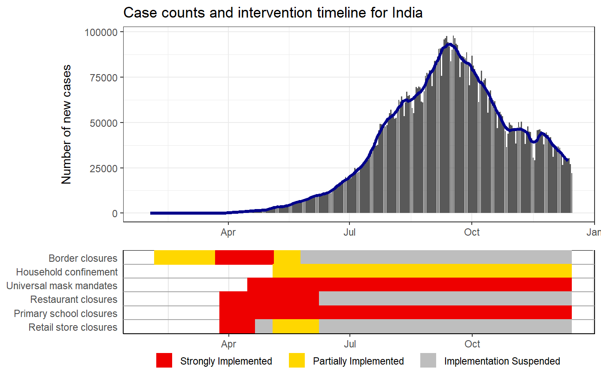
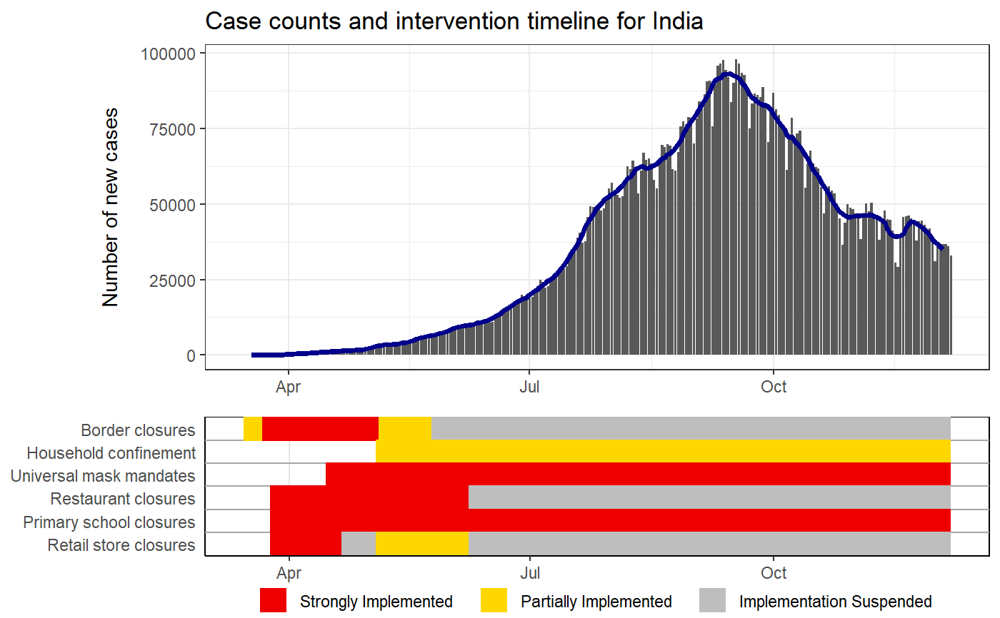
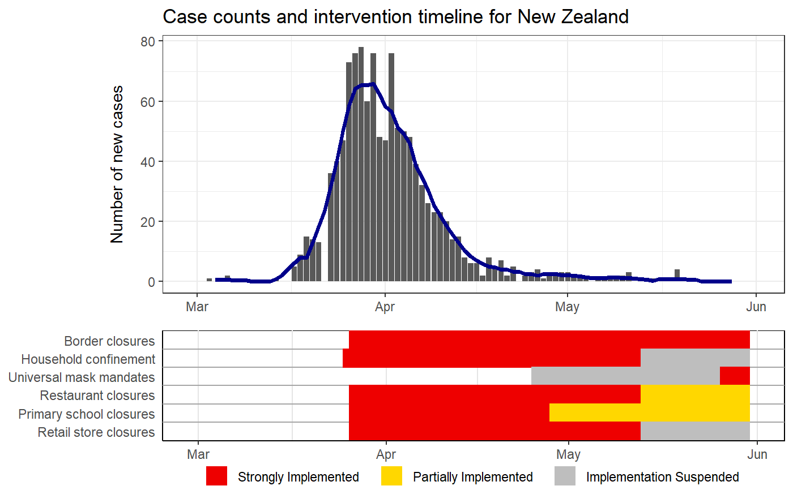
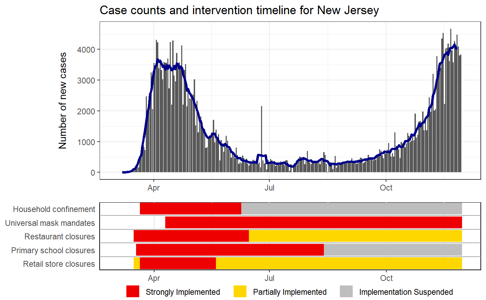

R/intervention_epi.R
intervention_epi.RdThis function plots the daily case counts (epi-curve) for a given country or admin1 unit with as seven day rolling average. The status of select intervention information (border closures, household confinement, universal mask mandates, restaurant closures, primary school closures, and retail store closures) are also plotted. The admin1 plotting is only available for 11 countries.
intervention_epi( hit_data, country = NULL, admin1 = NULL, source = c("WHO", "ECDC"), case_threshold = 0, first_date = NULL, last_date = NULL, date_format = "%m/%d/%Y", include_title = TRUE )
| hit_data | the full HIT-COVID database pulled from GitHub, pulled using hit_pull |
|---|---|
| country | country ISO 3166-1 alpha-3 code to plot (see geo_lookup for concordance of country codes to names) |
| admin1 | first administrative unit GID codes to plot (see geo_lookup for concordance of admin 1 codes to names). |
| source | the source of the daily case count data, one of "ECDC" or "WHO" (default is "WHO"). |
| case_threshold | threshold the total number of cases needs to exceed to start the plot (default is 0). |
| first_date | character string indicating the earliest date to plot (default is first day where
the total number of cases is greater than the |
| last_date | character string indicating the latest date to plot (default is today) |
| date_format | character string indicating the format of the date inputs (default is "%m/%d/%Y"). |
| include_title | logical indicating if the plot should have a title (default is TRUE) |
The HIT-COVID database must first be loaded with hit_pull and fed into this function.
Only one country or admin1 unit can be plotted at a time and the resulting plot will include the
case counts for this location with select intervention data. The user can specify the date range
for the plot using first_date and last_date. Another way to restrict the plot is to change
case_threshold then the earliest date of the plot will be when the total number of cases
in the country exceeded case_threshold. If both first_date and case_threshold
are provided, first_date will be used as the start of the plot.
The source for the country level data is either the European Centre for Disease Control (ECDC) or the World Health Organization (WHO) with the WHO as the default. The source for the admin1 data varies depending on the package and can be seen in the covidregional data source code. The admin1 case counts data is pulled using get_regional_data. As of now this is only available for 11 countries: Afghanistan, Belgium, Brazil, Canada, Columbia, Germany, India, Italy, Russia, UK, and USA. The admin1 units that are included in the HIT-COVID database can be found by using get_admin1. As of 11/30/2020 the admin1 data for India and Afghanistan does not work.
IMPORTANT note about intervention timelines printed under the epi curves. These final bars of each timeline represent the last logged status of an intervention. For some locations, the intervention data may not have been updated which means that older policies would appear to carry to the present when they are not still active. Care should be taken when interpretting these plots without knowledge of the completeness of the intervention data of the location of interest.
Sam Abbott, Katharine Sherratt, Jonnie Bevan, Hamish Gibbs, Joel Hellewell, James Munday, Paul Campbell and Sebastian Funk (2020). covidregionaldata: Subnational Data for the Covid-19 Outbreak. R package version 0.6.0. https://CRAN.R-project.org/package=covidregionaldata
ECDC national data: https://opendata.ecdc.europa.eu/covid19
WHO national data: https://covid19.who.int
Afghanistan admin1 data: https://data.humdata.org/dataset/afghanistan-covid-19-statistics-per-province
Belgium admin1 data: https://epistat.wiv-isp.be/covid/
Brazil admin1 data: https://github.com/wcota/covid19br
Canada admin1 data: https://health-infobase.canada.ca
Columbia admin1 data: https://github.com/danielcs88/colombia_covid-19
Germany admin1 data: https://npgeo-corona-npgeo-de.hub.arcgis.com/datasets/dd4580c810204019a7b8eb3e0b329dd6_0
India admin1 data: https://api.covid19india.org/csv/latest/state_wise_daily.csv
Italy admin1 data: https://raw.githubusercontent.com/pcm-dpc/COVID-19/master/dati-regioni/dpc-covid19-ita-regioni.csv
Russia admin1 data: https://raw.githubusercontent.com/grwlf/COVID-19_plus_Russia/master/csse_covid_19_data/csse_covid_19_time_series/time_series_covid19_confirmed_RU.csv
UK admin1 data: https://coronavirus.data.gov.uk/details/cases
USA admin1 data: https://raw.githubusercontent.com/nytimes/covid-19-data/master/us-states.csv
# Puling the HIT-COVID database hit_data <- hit_pull(add_first_case = FALSE) # Plotting the case counts for India intervention_epi(hit_data, country = "IND")#> #> #># Starting when there were more than 100 cases intervention_epi(hit_data, country = "IND", case_threshold = 100)# Plotting the case counts for the New Zealand from February to May intervention_epi(hit_data, country = "NZL", first_date = "3/1/2020", last_date = "5/31/2020")# Plotting the case counts for New Jersey, USA intervention_epi(hit_data, admin1 = "USA.31_1")